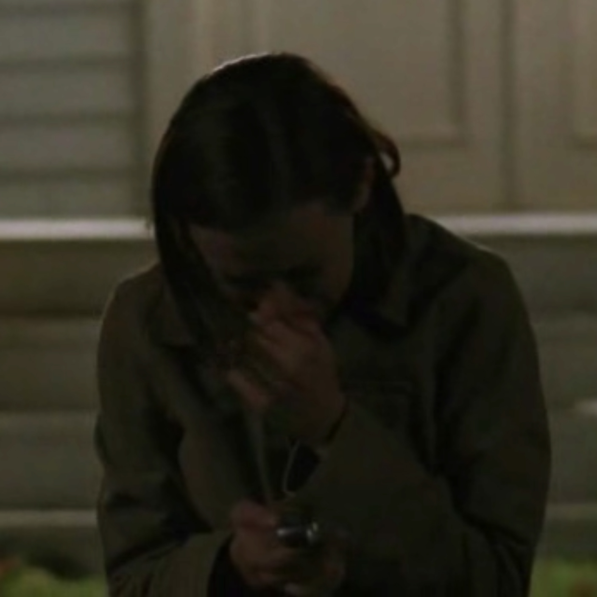

Gilmore Girls: A Summary
For those who don't know, Gilmore Girls follows single mother Lorelai Gilmore and her daughter, also named Lorelai but who prefers to be called Rory, living in the fictional town of Stars Hollow, Connecticut. The town is filled with colorful characters and is located approximately 30 minutes from Hartford, Connecticut . Ambition, education, work, family, and questions of class constitute some of the series' central concerns. The show's social commentary manifests most clearly in Lorelai's difficult relationship with her wealthy, appearance-obsessed parents, Emily and Richard Gilmore, and in Rory's interactions between the students at the Chilton Academy, and later, Yale University. Gilmore Girls is known for its fast-paced dialogue filled with pop-culture references.
The Boys
Dean
Dean was Rory's first boyfriend ever. When the series opens he has just moved to the small town of Stars Hollow and persues Rory right before she leaves for private school. They're both naive and young and their love unfolds before our eyes. He comes from a middle-class family from Chicago, believes in traditional values and always has floppy hair.
Jess
Jess is the nephew of local diner owner, Luke. He moves in with his uncle in the second season after his mother kicked him out for getting into too much trouble at school and with the law. Jess comes to us from a dark place but flourishes into his own person with the help of Luke, the Gilmores and the town of Stars Hollow. He is a bad-boy intelect who tends to make cringe-worthy bad decisions for himself.
Logan
Logan Huntzberger is introdeced during Rory's time at Yale. His family is the head of one of the biggest media conglomerates and he has only ever known a life of priviledge. An alternative bad-boy to Jess' ruggid one, Logan's lush upbringing gives him an invicible confidence sheild and broad knowledge of the world to keep up with Rory's wits. He is a fast-talking, reformed bad-boy who looks perfect on paper.
Their Best Moment

Dean
This has to be when Dean built rory a car. HE BUILT HER A CAR AT 17! And not just any car. A super cute vintage, blue volkswagon bug. This is the only highlight of Dean and Rory's relationship.
Jess
Jess wrote an entire book dedicated to Rory. After his breakdown in season 4, he comes back in season 6 with his life together and is a published author. His book was a metaphor for everything Rory wanted for Jess, he just needed to want to build it for himself, and he did.

Logan
In episode 19 of season 5 Logan fights to be exclusive with Rory, brings her to a family dinner then tells his entire family off when they say she wansn't "bread" for his family. Logan kills it this entire episode. After this episode... not so much.
Their Worst Moment

Dean
Where do you start? When he broke up with Rory because she wouldn't tell him she loved him? When he told her he wants a wife that only stays home and makes him dinner? When he cheated on his wife with Rory and then wouldn't stand up for her? When he dumped her AGAIN on her birthday? BOOOO DEAN.
Jess
Oh, Jess. Your lowest point has to be when you showed up nearly manic at Rory's dorm in 4th season begging her to run away with you. It wasn't the right time and you were such a mess then. Since, we know you've cleaned yourself up and gotten things on track.
Logan
There are many for logan but the cake has to be for breaking up with Rory on the series finale because she wouln't marry him, move to California and put aside her own journalism career for him. Really? You just dump her? Great, Logan.